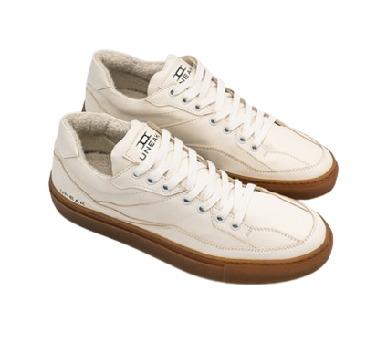

Sneakers which will change your next step making
it more sustainable, animal friendly,
conscious
Sneakers which will change your next step

making it more sustainable, animal friendly, conscious

We realize quite well that shoes are one of the most consumed products within the industry of fashion, which means volumes can be important, which is a big social responsibility.
Juarez is the name of the first sustainable sneaker shoes model from UNEAK, a new italian sustainable fashion brand, born from the ideas of Sonia and Davide.

The Juarez sneaker model features certified sustainable materials
It's produced completely in Italy, in a warm region where all workers live very close to the production site.
Juarez:
be the next step
THE PROCESS
We reviewed the entire traditional shoe production process

JUAREZ: White
We use synthetic cactus based upper material
JUAREZ: Black and White
We gather materials for the JUAREZ sneaker locally
JUAREZ: Red and White
MATERIALS
- – Upper / Desserto vegan leather: 53% Bio PU, 13% Cactus, 12% Cotton, 22% Polyester
- – Lining and first layer of the fussbett / Bamboo fiber: 80% bamboo fiber, 20% cotton
- – Internal reinforcements / Biorel reinforcements: bio-degradable fiber
- – Sole / Natural Rubber
- – Rest of the fussbett / Cork + 100% Recycled Foam + Coconut Fiber + Bamboo Fiber (as above)